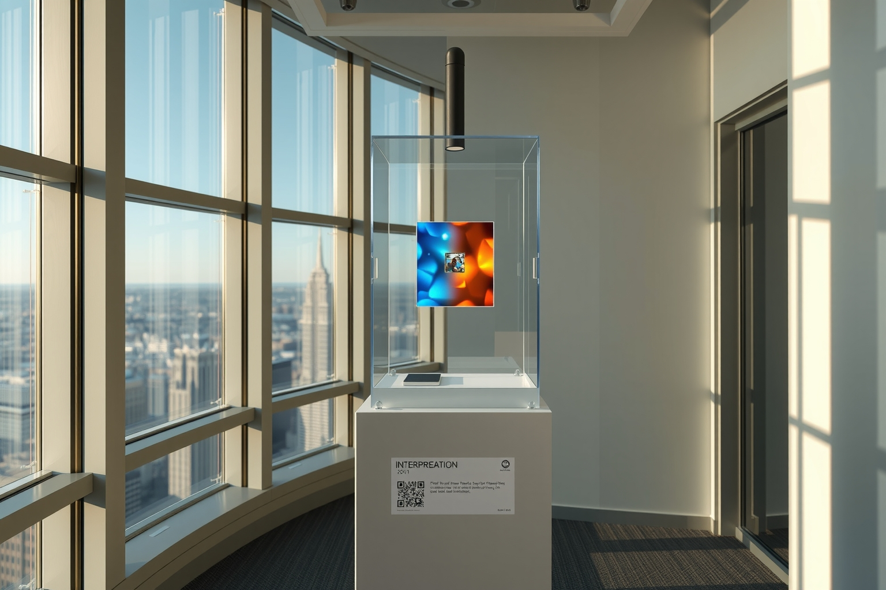

entropy c / NYC window installation
Placement and presentation study—not a photograph of the actual office or skyline.

Secure
Weighted or anchored pedestal, locking vitrine, concealed power/network, rear service access.
Weighted or anchored pedestal, locking vitrine, concealed power/network, rear service access.
Visual
Window light becomes an abstract blue/orange projection rather than a recognizable camera view.
Window light becomes an abstract blue/orange projection rather than a recognizable camera view.
Freestanding
Placed near the glass, not attached to it; final location requires Facilities and clearance review.
Placed near the glass, not attached to it; final location requires Facilities and clearance review.